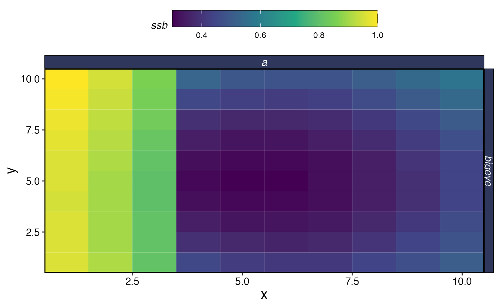
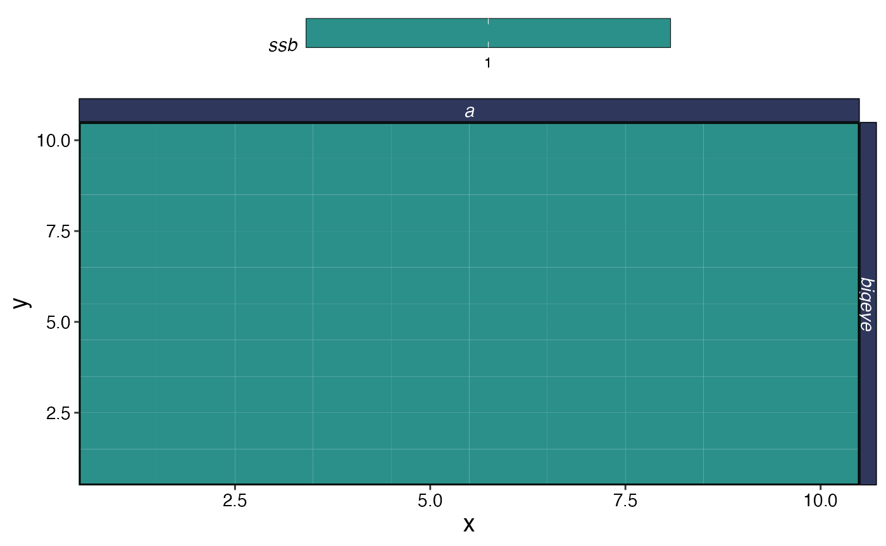
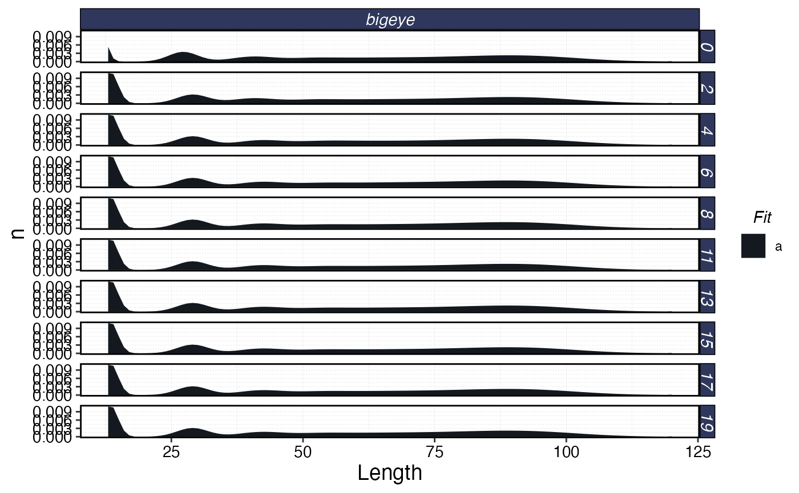

library(marlin)
library(tidyverse)
#> ── Attaching core tidyverse packages ──────────────────────── tidyverse 2.0.0 ──
#> ✔ dplyr 1.1.4 ✔ readr 2.1.4
#> ✔ forcats 1.0.0 ✔ stringr 1.5.1
#> ✔ ggplot2 3.4.4 ✔ tibble 3.2.1
#> ✔ lubridate 1.9.3 ✔ tidyr 1.3.0
#> ✔ purrr 1.0.2
#> ── Conflicts ────────────────────────────────────────── tidyverse_conflicts() ──
#> ✖ dplyr::filter() masks stats::filter()
#> ✖ dplyr::lag() masks stats::lag()
#> ℹ Use the conflicted package (<http://conflicted.r-lib.org/>) to force all conflicts to become errors
library(marlin)
library(tidyverse)
library(gganimate)
library(ggridges)
years <- 20
resolution <- 10
patches <- resolution^2
seasons <- 8
steps <- years * seasons
time_step <- 1 / seasons
spatial_catchability<- expand_grid(x = 1:resolution, y = 1:resolution) %>%
mutate(habitat = dnorm(x, resolution / 2, .5 *resolution) * dnorm(y, resolution / 2, .5 * resolution)) %>%
mutate(habitat = habitat * (x >= 4))
bigeye_catchability <- spatial_catchability %>%
pivot_wider(names_from = y, values_from = habitat) %>%
select(-x) %>%
as.matrix()
fauna <-
list(
"bigeye" = create_critter(
scientific_name = "thunnus obesus",
adult_diffusion = 10, # standard deviation of the number of patches moved by adults
recruit_diffusion = 5,
density_dependence = "global_ssb",
seasons = seasons,
init_explt = 1,
explt_type = "f",
spawning_seasons = c(7),
sigma_r = 0,
rec_ac = 0,
linf = 100,
vbk = 0.2,
age_mature = 4,
m = 0.2,
weight_a = 1e-4,
weight_b = 3,
max_age = 15,
query_fishlife = FALSE,
ssb0 = 42
)
)
fleets <- list(
"longline" = create_fleet(
list("bigeye" = Metier$new(
critter = fauna$bigeye,
price = 10,
sel_form = "logistic",
sel_start = 1,
sel_delta = .01,
catchability = 1e-3,
p_explt = 1,
spatial_catchability = bigeye_catchability
)
),
base_effort = 0,
resolution = resolution
)
)
# fleets <- tune_fleets(fauna, fleets)
spatial_q_sim <- simmar(fauna = fauna,
fleets = fleets,
years = years)
test<- process_marlin(sim = spatial_q_sim, time_step = time_step)
test$fauna |>
filter(step < 5) |>
group_by(step, age) |>
summarise(n = sum(n)) |>
ggplot() +
geom_col(aes(age, n, fill = age == min(age))) +
facet_wrap(~step) +
theme_minimal()
#> `summarise()` has grouped output by 'step'. You can override using the
#> `.groups` argument.

plot_marlin(test)
plot_marlin(test, plot_type = "space")
#> Warning in plot_marlin(test, plot_type = "space"): Can only plot one time step
#> for spatial plots, defaulting to last of the supplied steps
plot_marlin(test, plot_type = "length", fauna = fauna, plot_var = "n")
#> Warning in plot_marlin(test, plot_type = "length", fauna = fauna, plot_var =
#> "n"): trying to plot too many steps at once, cutting down to 10
#> dropping recruits from plot since drop_recruits = TRUE